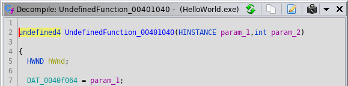
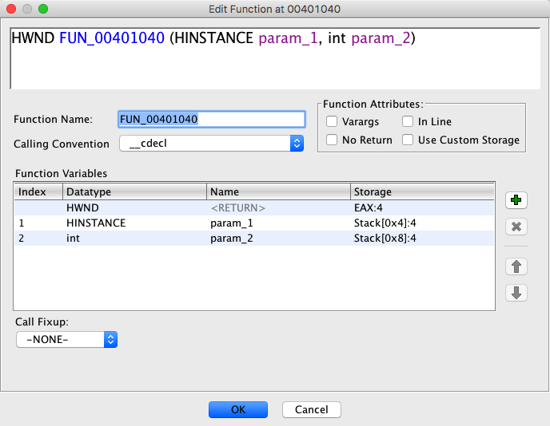
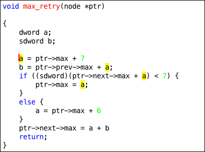
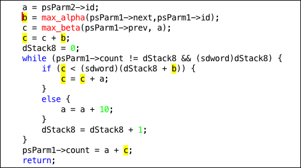

To display the Decompiler window, position the cursor on a
function in the Code Browser, then select the
 icon from the tool bar, or the
Decompile option from the
Window menu in the tool.
icon from the tool bar, or the
Decompile option from the
Window menu in the tool.
A Decompiler window always displays one function at a time. The initial window that comes up in the Code Browser is called the Main window (see Main Window), and it automatically decompiles and displays the function at the current address, following the user's navigation. Other Snapshot windows can also be opened that show different functions at the same time (see Snapshot Windows). But any window only shows one function at a time.
Decompilation for a window is performed "on-the-fly". It automatically incorporates the most recent labels, data-types, comments, and other annotations applied by the user. Any change to the Program annotations (renaming, setting data-types, etc.) automatically causes each window to redecompile its function.
The time it takes to decompile a single function is generally proportional to the number of instructions that make up the body of the function. Large functions may require a significant amount of time to decompile, and because decompilation is performed on-the-fly, closing a window or navigating away from a function runs the risk of losing results that took a long time to compute.
The window shows the decompiled output for the function associated with the window in C or some other high-level programming language. The output is tokenized following conventions of the language. Possible token types include:
- Data-type Name
- Variable Name
- Variable Sub-field Name
- Function Name
- Operator
- Label
- Comment
- Syntax
The type of token provides context for the pop-up menus, which can trigger highlighting, navigation, renaming, and other actions within the window.
If the window starts to decompile but ultimately fails to complete the decompilation, due
to an error or cancellation, it displays a brief description of what caused the failure
instead of the normal output. Decompilation may also successfully produce output but issue
one or more warnings during the process. These warnings are integrated into the output as
source code comments starting with label WARNING:. They occur either at the
beginning of the function as part of the function header or at the point in the code directly
associated with the warning (see Warning Comments).
Initially pressing
 or selecting
Decompile from the Window menu in the tool
brings up the main window. The main window always displays the function
at the current address within the Code Browser and follows as the user navigates
within the Program. Any mouse click, menu option, or other action causing the cursor to move to a new
address in the Listing also causes the main window to display the function containing that address.
Navigation to new functions is also possible from within the window by double-clicking on function
tokens (see Mouse Actions).
or selecting
Decompile from the Window menu in the tool
brings up the main window. The main window always displays the function
at the current address within the Code Browser and follows as the user navigates
within the Program. Any mouse click, menu option, or other action causing the cursor to move to a new
address in the Listing also causes the main window to display the function containing that address.
Navigation to new functions is also possible from within the window by double-clicking on function
tokens (see Mouse Actions).
The main window maintains a map between the individual variable and operator tokens displayed in the window and the machine instructions which correspond to them. Disassembled machine instructions are displayed by any Listing window, and having both a Listing and Decompiler window side by side lets the user see this correspondence between the decompiled and disassembled views of the function. Clicking on tokens in the Decompiler window causes the Listing window to navigate to the corresponding instruction, and clicking instructions in the Listing window causes the Decompiler window to navigate to the corresponding line. Highlighting a region of code in either window causes the corresponding region in the other window to be highlighted.
Variable Name and Variable Sub-field Name tokens map to the machine instruction which wrote to the variable at that point in function.
Operator tokens map to the machine instruction which performed that operation.
Function Name tokens, if they represent a call to another function, map to the machine instruction executing the call.
Comment tokens map to the machine address associated with the comment.
![[Warning]](help/shared/warning.png) |
|
| In general, the map between machine instructions and tokens is not one-to-one because the Decompiler transforms its underlying representation of the function. An instruction may no longer have any operator that corresponds to it in the decompiled result. Tokens may be transformed from the natural operation of the machine instruction they are associated with or may represent the effect of multiple instructions. |
Pressing the
 icon
in any Decompiler window's toolbar causes a Snapshot window
to be created, which shows decompilation of the same function.
Unlike the main window however, the Snapshot window
does not change the function it displays in response to external navigation events.
A Snapshot window can be used to hold a function fixed while the user navigates to
different functions in Listing or other windows.
icon
in any Decompiler window's toolbar causes a Snapshot window
to be created, which shows decompilation of the same function.
Unlike the main window however, the Snapshot window
does not change the function it displays in response to external navigation events.
A Snapshot window can be used to hold a function fixed while the user navigates to
different functions in Listing or other windows.
Multiple Snapshot windows can be brought up to show decompilation of different functions simultaneously. Snapshot windows are visually distinguished from the main Decompiler window by their colored outline.
Navigating to new functions within a Snapshot window is possible when the window is active. The window responds to the actions
- Go To... (pressing the 'G' key)
- Go to previous location (Back)
- Go to next location (Forward)
Double-clicking on specific tokens within the Snapshot window may also cause it to navigate to a new location (see Double-Click).
If the current location within the Code Browser is in disassembled code, but that code is not contained in a Formal Function Body, then the Decompiler invents a function body, on the fly, called an Undefined Function. The background color of the window is changed to gray to indicate this special state.
|  |
The entry point address of the Undefined Function is chosen by backtracking through the code's control flow from the current location to the start of a basic block that has no flow coming in except possibly from call instructions. During decompilation, a function body is computed from the selected entry point (as with any function) based on control flow up to instructions with terminator semantics.
The current address, as indicated by the cursor in the Listing for instance, is generally not the entry point of the invented function, but the current address will be contained somewhere in the body.
For display purposes in the window, the invented function is given a name based on the
computed entry point address with the prefix UndefinedFunction. The function
is assigned the default calling convention, and parameters are discovered as part of
the Decompiler's analysis.
The following actions are available by pressing the corresponding icon in the title/tool bar at the top of each individual Decompiler window. The action applies to the function and Decompiler results displayed in that particular window.
- button
Exports the decompiled result of the current function to a file. A file chooser dialog is displayed to select the name of the output file. If a file extension is not specified, a ".c" is appended to the filename. If the file already exists, a final dialog is presented to confirm that the file should be overwritten.
This action exports a single function at a time. The user can export all functions simultaneously from the Code Browser, by selecting the menu File -> Export Program... and then choosing C/C++ from the drop-down menu. See the full documentation for the Export dialog.
 - button
- button
Creates a new Snapshot window. The Snapshot window displays the same function as the Decompiler window on which the action was triggered, and if that window navigates to other functions, the Snapshot does not follow but continues to display the original function (see Snapshot Windows).
 - button
- button
Triggers a re-decompilation of the current function displayed in the window. Any cached results are discarded, and a full decompile is performed.
![[Tip]](help/shared/tip.png) |
|
| This action is not necessary for normal reverse engineering tasks. Re-decompilation is automatically triggered for all Decompiler windows by any change to the Program, so the most up-to-date decompilation is always available to the user without this action. This action is primarily a debugging aid for plug-in developers. |
This action is located in the drop-down menu on the right side of the Decompiler window tool/title bar.
Information suitable for debugging the decompilation process for the current function is collected and saved to an output file in XML format. A file chooser dialog is presented to the user to choose the output file. The file is useful when submitting bug reports about the Decompiler as it is generally much smaller than the entire Program and only contains information specific to the function. Information is generated by performing the full decompilation of the function and collecting all the data and annotations required during the process, including instruction bytes, symbols, data-types, and other settings affecting decompilation.
This action is located in the drop-down menu on the right side of the Decompiler window tool/title bar.
Generate a data flow graph based upon the results in the active Decompiler window, and render it using the current Graph Service.
Moves the Decompiler window cursor and highlights the token. Within the main window, if a token has a machine address associated with it, a left-click generates a navigation event to that address, which may cause other windows to display code near that address (see Cross-Highlighting).
Selecting a '(' or ')' token causes it and its matching parenthesis to be highlighted along with the entire expression they surround.
Selecting a '{' or '}' token causes it and its matching brace to be highlighted.
Moves the Decompiler window cursor, highlights the token, and brings up the menu of context-sensitive actions. Any highlighting and navigation is identical to a left-click. The menu actions presented depend primarily on the token type and are tailored to the context at that point in the code.
Navigates based on the selected symbol or other token (see below). If the selected token represents a formal symbol, such as a function name or a global variable, double-clicking causes a navigation event to the address associated with the symbol.
This action is performed by clicking twice on the desired token with the left mouse button.
- Function Symbols
Double-clicking a called function name causes the window itself to navigate away from its current function to the called function, triggering a new decompilation if necessary and changing its display.
- Global Variables
Double-clicking a global variable name does not have any effect on the Decompiler window itself, but Listing or other windows may navigate to the storage address of the global variable.
- Constants
Double-clicking a token representing a constant causes the constant to be treated as an address, and a navigation event to that address is generated. The Decompiler window itself navigates depending again on whether the address represents a new function or not.
- Labels
Double-clicking the label within a goto statement causes the window to navigate to the target of the goto, within the function. The cursor is set and the window view is adjusted if necessary to ensure that the target is visible.
- Braces
-
Double-clicking a '{' or '}' token, causes the window to navigate to the matching brace within the window. The cursor is set and the window view is adjusted if necessary to ensure that the matching brace is visible.
Braces may also be navigated via the keyboard.
Opens a new Snapshot window, navigating it to the selected symbol. This is a convenience for immediately decompiling and displaying a called function in a new window, without disturbing the active window. The behavior is similar to the Double-Click action, the selected token must represent a function name symbol or possibly a constant address, but the navigation occurs in the new Snapshot window.
This action is performed by clicking twice on the desired token with the left mouse button, while holding down the Ctrl key.
Generates a navigation event to the address, within the current function, associated with the clicked token. This allows Snapshot windows to do basic cross-highlighting in the same way as the main Decompiler window. A ctrl-shift-click causes Listing and other windows to navigate to and display the same portion of code currently being displayed in the Snapshot window (see Cross-Highlighting).
This action is performed by clicking on the desired token with the left mouse button, while holding down both the Ctrl and Shift keys.
Almost all the actions described in this section can be activated from the menu that pops up when right-clicking on a token within the Decompiler window. The pop-up menu is context sensitive and the type of token in particular (see Display) determines what actions are available. The token clicked provides a local context for the action and may be used to pinpoint the exact variable or operation affected.
Many of the actions have have a key binding, which, if it exists, will be listed in the pop-up menu. If the key binding is used to activate the action, local context is determined by the current cursor position. Key bindings can be reassigned from the Key Bindings section of the Tool Options Dialog.
Create a pointer with an offset into its underlying data-type and apply it to the selected variable.
The action is available on variable tokens that the Decompiler has already determined are pointers, and is designed to create an offset pointer, which is a typedef with its component offset attribute set (See Offset Pointers). It brings up a dialog that allows the user to select:
- An underlying data-type for the new pointer
- A byte offset (relative to the start of the underlying data-type)
- A name for the new pointer data-type
If the Decompiler determines that the selected variable points into a known structure, this information is used to prepopulate the dialog, with the structure used as the underlying data-type.
Clicking OK in the dialog immediately creates the new pointer data-type and attaches it to the selected variable, triggering a new decompilation. The annotation may reveal new field accesses or other markup associated with the underlying data-type, which will be immediately visible once decompilation completes.
If the user selects the name of an offset pointer that already exists and its other properties match the dialog, the existing pointer will be used to complete the action, rather than creating a new data-type. If an unrelated data-type already exists with the selected name, the action cannot be completed and the dialog will display a warning.
![[Note]](help/shared/note.png) |
|
| If the offset pointer already exists but its offset does not match the value specified in the dialog, the user is given the option of changing the existing data-type's offset. Confirming this change alters the existing data-type, which may affect analysis of other unrelated parts of the program that use it. |
Once an offset pointer exists, either by invoking this action or by creating it manually (see Pointer-Typedef Settings), it can be applied to variables like any other data-type, either through the Listing window or using the Retype Variable action in the Decompiler window.
Automatically create a structure data-type for a selected variable based on its use within the current function and possibly child functions.
The structure definition is filled in by examining how the variable is used, assuming it is a pointer to the structure, tracing data flow to all the expressions the variable is used in. LOAD and STORE operations trigger new fields and additive offsets are traced to calculate the offset of the fields within the structure definition.
Once the new structure is created, the selected variable is retyped to be a pointer to the structure. Within the window, the function is decompiled again and references to new fields in the structure should be immediately apparent. These can be renamed or retyped from the window to further refine the new structure definition (see Rename Variable).
- Auto Fill in Structure
If the selected variable is already a pointer to a structure, this action fills in new information about the structure on top of the existing structure definition. Depending on how the pointer is used in the current function, new fields may be added and the data-type of undefined fields may be changed, but other existing parts of the structure definition are preserved.
- Auto Fill in Class Structure
If the selected variable is the this parameter for a class method, the menu title for this action reflects this, but the action is the same. The class's structure definition is filled in with any new information.
Set or change a comment at the address of the selected token.
These actions bring up the general Comment dialog (see Comments), which associates the comment with a specific address in the Program. For comment actions in the Decompiler, this address is of the machine instruction most closely linked to the selected token. Any comments generated from a Decompiler window will be visible in Listing and other windows viewing the same section of code.
A Decompiler window can display all comment types, but this may be affected by the Display options (see Comments).
- Set Plate Comment...
Brings up the dialog for setting or editing a Plate comment.
- Set Pre Comment...
Brings up the dialog for setting or editing a Pre comment.
- Set...
Brings up the dialog for setting or editing a comment based on the selected token. A Plate comment is edited if the token is part of the function's header. A Pre comment is edited otherwise.
Commit the names of any local variables discovered during the Decompiler's analysis to the Program database as new Variable Annotations. The recovered data-type is not committed as part of the annotation, only the name and storage location.
Parameters are not affected by this command (see Commit Params/Return). The purpose of the command is to synchronize the local variables in the Decompiler's view of a function with the formal Variable Annotations in the disassembly view, without otherwise affecting the decompilation. After executing this command, additional changes to local variables can be performed directly on the corresponding annotations displayed in Listing windows, using various methods (see Variable Annotations). Data-types are not forced for new annotations, they are created with an undefined data-type, which allows the Decompiler to refine its view of the variable's data-type as new information becomes available (see Forcing Data-types).
Commit the Decompiler's analysis of the input parameters and return value of the current function as annotations to the Program database.
In the absence of either imported or user-defined information about a function's prototype, the Decompiler performs its own analysis of what the prototype is, determining the storage location and data-type of all parameters and the return value. This action commits this analysis permanently for the current function displayed in the window, creating a matching Variable Annotation for each input parameter and the return value. The new annotations will be displayed in a Listing window as part of the function header, and the action effectively synchronizes the disassembly view and Decompiler's view of the function prototype.
Committed prototype information is used both when decompiling the function itself and when decompiling other functions that call it. The committed annotations are forcing on the Decompiler (see Forcing Data-types), and it will no longer perform prototype recovery analysis for that function. The Decompiler assumes the committed parameters, and only the committed parameters, exist and will not modify their data-types, with the exception of parameters that are explicitly marked as having an undefined data-type. The user must manually modify individual variables or clear the entire prototype if they want a change (see Variable Annotations).
Change the displayed encoding for the integer or character constant under the cursor.
Various encodings are possible.
This command primarily targets a constant token in the Decompiler window, but if there is a scalar operand in an instruction that corresponds with the selected constant, the same conversion is also applied to the scalar in any Listing window. This is equivalent to selecting the Convert command from a Listing window. There may not be a scalar operand directly corresponding to the selected constant, in which case the conversion will be applied only in the Decompiler window.
The data-type of the selected token is not changed by the action, and it retains its meaning in the decompiler output. This slightly limits the possible conversions as signed values cannot be forced into an unsigned representation, and vice versa.
The constant's encoding can be changed by selecting a different Convert command, or it can be returned to its default encoding by selecting the Remove Convert/Equate command.
Copy selected code from the Decompiler window into the clipboard.
This is part of the standard copy capabilities for all Ghidra windows and is suitable for copying (sections of) Decompiler output into other documents.
Bring up a dialog for editing the definition of the data-type under the cursor.
The cursor must be on the data-type name token, not on a variable or other syntax. The action is only available for structures and unions, which will bring up the Structure Editor, and for enumerations, which will bring up the Enum Editor.
Any change to the definition of the data-type is automatically incorporated by the Decompiler into its output (see Variable Data-types).
Bring up a dialog for editing the prototype of a selected function and other details about how it passes parameters.
The action is available from any token in the Decompiler window. Most tokens trigger editing of the current function itself, but a called function can be edited by putting the cursor on its name specifically.
|  |
The dialog provides detailed control over elements like
- Parameters - including name, data-type, and storage
- Return Type - including data-type and storage
- Variable Arguments and
- Inlining
See documentation for the Function Editor Dialog. The Decompiler automatically incorporates any changes into its output.
Search for strings within the active window, in the current Decompiler output.
The command brings up a dialog where a search pattern can be entered as a raw string or regular expression. The search is performed directly on the text of the decompiled function, from the current cursor; forward each time the Next button is hit, or backward for the Previous button. Any match is highlighted in the window, and the cursor is set to the start of the match.
Force the Decompiler to assume a specific read or write to a variable, with a union data-type, is referring to a user selected field.
A union data-type overlays multiple other data-type interpretations (fields) on top of one variable; any one of which may be active at a point where the variable is accessed. The Decompiler automatically selects which field it thinks is being referenced (See Unions). But this action allows the user to force the Decompiler to use a particular field.
The cursor must be on the token currently representing the union field to be changed.
The action brings up a dialog with a drop-down menu of the possible fields that can be forced.
A field must be compatible with the selected access or it will not be listed in the menu. This usually
means that the data-type of the field must be the same size as the read or write being performed.
The menu option (no field) may also be available, which if selected, indicates that
the Decompiler should treat the read or write as accessing the union as a whole.
Its also possible that no other field is possible but the current one. In which case, the dialog will
display a warning message and contain no drop-down menu.
Selecting a menu option and clicking OK completes the action. Subsequent decompilation should show the new field at the selected access point, and the data-type associated with the selected field will likely propagate further across the function, possibly triggering substantial changes to the output.
If there is more than one access to the same variable with a union data-type, each representative field token can be forced to a new field individually.
These actions are available from the keyboard, with no equivalent pop-up menu entry. Shift-Open Bracket will go to the previous enclosing open brace. Shift-Close Bracket will go to the next enclosing closing brace. These key bindings can be changed via the Tool Options Dialog.
Paired braces can also be navigated by double-clicking.
All these actions highlight a specific set of variable tokens tracing the data flow of the selected variable within the current function, defined as the directed flow of data from input variables through operations that manipulate their value to their output variables. The operations and variables chain together to form data-flow paths.
- Def-Use
-
Highlight the single token where the selected variable was last written (def), and highlight all the tokens where that single value is read (use). The written token, generally where the variable is on the left-hand side of an assignment expression, is highlighted in a different color. If the variable is written on multiple merging control-flow paths, no written token is highlighted.
In the following example, the token representing the first write to the variable a is selected when Def-Use is chosen.
 - Forward Slice
-
Highlight all variable tokens where the value at that point in the function is directly affected by the value at the selected variable token. A token is highlighted if there is a direct data-flow path starting from the selected point and ending at the token. A call operation is not considered a direct data-flow path from its input parameters to its output value.
In the following example, the token b, the output of max_alpha, is selected when Forward Slice is chosen.
 - Backward Slice
Highlight all variable tokens where the value at that point in the function directly affects the value at the selected variable token. A token is highlighted if there is a direct data-flow path starting from the token and ending at the selected point. A call operation is not considered a direct data-flow path from its input parameters to its output value.
- Forward Operator Slice
Highlight every operator token that manipulates a value directly affected by the value at the selected variable token. Along each direct data-flow path that starts at the selected point, each token representing an operation is highlighted, along with any explicit variable read or written by the operation. A call operation is not considered a direct data-flow path from its input parameters to its output value. This is an alternate presentation of the slice displayed by the Forward Slice action.
- Backward Operator Slice
Highlight every operator token that manipulates a value that directly affects the value at the selected variable token. Along each direct data-flow path that ends at the selected point, each token representing an operation is highlighted, along with any explicit variable read or written by the operation. A call operation is not considered a direct data-flow path from its input parameters to its output value. This is an alternate presentation of the slice displayed by the Backward Slice action.
A secondary highlight is a semi-permanent token highlight in the Decompiler window that, unlike normal highlights, will not go away as the user clicks other tokens. The color and text being highlighted is controlled by the user and will persist for for the duration of the Ghidra session or until the user explicitly removes the highlight.
- Set Highlight
Apply a secondary highlight to all text matching the text of the token under the cursor. A color is chosen randomly for the Ghidra session. If the same highlight is removed and then reactivated later in the session, the same color will be used.
- Set Highlight...
Apply a secondary highlight to all text matching the text of the token under the cursor, as in the Set Highlight action above. A Color Chooser dialog is shown allowing the user to select the specific color for the highlight. The dialog is initialized with a random color or with the color previously applied to the same token.
- Remove Highlight
Remove the existing secondary highlight applied to the token under the cursor. Other highlights are not affected.
- Remove All Highlights
Remove all secondary highlights in the current function. Highlights in other functions are not affected.
Override the function prototype corresponding to the function under the cursor.
This action can be triggered at a call site, where the function being decompiled is calling into another function. Users must select either the token representing the called function's name or one of the tokens representing the function pointer at the call site. The action brings up a dialog where the function prototype corresponding to the call site can be edited. The dialog provides fine-grained control of the return data-type along with the name and data-type of each input parameter. The function prototype properties Calling Convention, In Line, and No Return can also be set (see Function Prototypes).
Confirming the dialog forces the new function prototype on the Decompiler's view of the called function, but only for the single selected call site.
This action is suitable for either indirect calls or direct calls to functions taking a variable number of arguments; situations where a complete description of all parameters is not available. For direct calls with a fixed number of arguments, it is almost always better to provide parameter information by setting the function's prototype directly (see the Commit Params/Return command). In this situation, the "Override Signature" command is still possible, but it will bring up a confirmation dialog.
Calculate locations in the Program that reference the data-type of the token under the cursor. Results are collected in a Location References Dialog, which displays a row for each reference with its address and other context.
Uses (references) specifically are to variables that have been assigned the data-type. References to parameters and global variables are always listed. If the Dynamic Data Type Discovery option is on (see To Find Location References to Data Types), the Decompiler's propagation analysis is invoked on all functions to discover local variables as well.
Display locations in the Program that reference the function or global variable associated with the token under the cursor. Results are collected in a Location References Dialog, which displays a row for each reference with its address and other context.
In the case of a function, references include both instructions and data referring to the entry point address of the function.
Display locations in the Program that reference the address associated with the token under the cursor. Results are collected in a Location References Dialog, which displays a row for each reference with its address and other context.
The selected address is of the instruction most closely associated with the variable or operator represented by the token.
Remove the display conversion or equate from the constant under the cursor.
The selected constant must have had either a Convert or a Set Equate... command applied to it. After applying this command, the conversion is no longer applied, and the selected constant will be displayed using the decompiler's default strategy, which depends on the data-type of the constant and other display settings (See Integer format).
Remove the overriding function prototype applied previously to the called function under the cursor.
This action can only be triggered at call sites, where an overriding prototype was previously placed by the Override Signature command. As with this command, users must select either the token representing the called function's name or the tokens representing the function pointer at the call site. The action causes the override to be removed immediately. Parameter information will be drawn from the Decompiler's normal analysis.
Remove the label corresponding to the token under the cursor.
A label can be removed by triggering this action while the corresponding label token is under the cursor. For more on removing labels, see Removing a Label.
The change will be immediately visible across all references to the label (including in any Decompiler, Listing, and Functions windows).
Rename the function corresponding to the token under the cursor.
The current function can be renamed by selecting the name token within the function's declaration at the top of the Decompiler window, or individual called functions can be renamed by selecting their name token within a call expression. This action brings up a dialog containing a text field prepopulated with the name to be changed. The current namespace (and any parent namespaces) is presented in a drop-down menu. Editing the text field changes the base name of the function, and selecting within the drop-down menu allows the function to be moved into a parent namespace.
A new or child namespace can be specified by prepending the base name with the namespace using the C++ "::" delimiter characters. Any namespace path entered this way is considered relative to the namespace set in the drop-down menu, so the Global namespace may need to be selected if the user wants to specify an absolute path. If any path element of the namespace does not exist, it is created.
The change will be immediately visible across all references to the function (including in any Decompiler, Listing, and Functions windows).
Rename the field currently under the cursor within its structure data-type definition.
The action brings up a dialog prepopulated with the current name of the field. Editing and confirming this dialog immediately changes the field's name in its corresponding structure definition. The dialog enforces unique field names.
If the initial name looks like field_0x.., it may be that the field offset was
discovered by the Decompiler, and the field does not exist in the structure definition.
In this case, a new field is created at that offset, with the new name and a data-type of
undefined.
The change to the definition is visible globally throughout the Program, anywhere the data-type is referenced. Decompilation is triggered again to incorporate the new name, but the output is otherwise unaffected.
Within a Decompiler window, field name tokens are presented in context, showing how they are used within the code flow of the current function. Combined with Auto Create Structure and Retype Field, this action allows a structure to be created and filled in based on this context.
Rename the global variable corresponding to the token under the cursor.
This action brings up a dialog containing a text field prepopulated with the current name of the variable. The current namespace (and any parent namespaces) is presented in a drop-down menu. Editing the text field changes the base name of the variable, and selecting within the drop-down menu allows the variable to be moved into a parent namespace.
A new or child namespace can be specified by prepending the base name with the namespace using the C++ "::" delimiter characters. Any namespace path entered this way is considered relative to the namespace set in the drop-down menu, so the Global namespace may need to be selected if the user wants to specify an absolute path. If any path element of the namespace does not exist, it is created.
The change will be immediately visible across all references to the variable, including in Decompiler and Listing windows. A new decompilation is triggered to incorporate the new name, but the output is otherwise unaffected.
Rename the label corresponding to the token under the cursor.
A label can be renamed by triggering this action while the corresponding label token is under the cursor. This action brings up the Edit Label Dialog.
The change will be immediately visible across all references to the label (including in any Decompiler, Listing, and Functions windows).
Rename the local variable or parameter currently under the cursor.
The action brings up a dialog prepopulated with the current name of the variable. Editing and confirming this dialog immediately changes the name, unless there is a conflict with another variable.
Decompilation is triggered again to incorporate the new name, causing local variable declarations to be reordered and line breaks to change, but otherwise the the output is unaffected.
Local variables and parameters presented by the Decompiler may be invented on-the-fly and don't necessarily have a formal annotation in Ghidra (see Variable Annotations). Performing this action on a variable will create an annotation if one didn't exist previously, which will generally be visible as part of the function header in any Listing window. A new annotation will not commit the data-type of the variable, and data-types applied later, and elsewhere in the function, can still propagate into the variable.
Performing this action on a function parameter causes a formal annotation to be created for all parameters, although the names of any other parameters will not be changed.
Change the data-type of the field currently under the cursor within its structure data-type definition.
The action brings up a dialog prepopulated with the current data-type associated with the field. The user can select any fixed length data-type in the Program, although selecting a larger data-type may cause an error if there is not enough room for it with other existing fields. Editing and confirming this dialog immediately changes the corresponding data-type definition.
The change to the definition is visible globally throughout the Program, anywhere the data-type is referenced, and is forcing on the Decompiler (see Forcing Data-types). Decompilation is triggered again, and the new data-type is propagated from the point of the field reference(s). Changes to the output may be large and indirect.
Change the data-type of the global variable currently under the cursor.
This action brings up a dialog prepopulated with the current data-type of the variable. The user can select any fixed length data-type in the Program that matches the size of the variable. Editing and confirming this dialog immediately changes the data-type.
The change is visible globally throughout the Program, anywhere the variable is referenced, and is forcing on the Decompiler (see Forcing Data-types). Decompilation is triggered again, and the new data-type is propagated from the variable reference(s). Changes to the output may be large and indirect.
Change the data-type of the current function's return value.
This action is only available from the data-type token in the function declaration, at the
top of the Decompiler's output. It brings up a dialog prepopulated with the current
data-type returned by the function. The user can select any fixed length data-type in the Program.
Editing and confirming this dialog immediately changes the data-type. If an annotation for
the return value (named <RETURN>) did not exist previously, one is created.
As input parameter annotations and the return value annotation must be committed as a whole (see the discussion of function prototype's in Forcing Data-types), if no prototype existed previously, this action also causes variable annotations for all input parameters to be created as well. In this situation, the action is equivalent to Commit Params/Return, and a confirmation dialog comes up to notify the user.
Setting a data-type on the return value using this action affects decompilation for the function itself and, additionally, any function that calls this function. Within a calling function, the Decompiler propagates the data-type into the variable or expression incorporating the return value at each call site.
Change the data-type of the local variable or parameter currently under the cursor.
This action brings up a dialog prepopulated with the current data-type of the variable. The user can select any fixed length data-type in the Program that matches the size of the variable. Editing and confirming this dialog immediately changes the data-type.
The change to the data-type is forcing on the Decompiler (see Forcing Data-types). Decompilation is triggered again, and the new data-type is propagated from the variable reference(s). Changes to the output may be large and indirect.
Local variables and parameters presented by the Decompiler may be invented on-the-fly and don't necessarily have a formal annotation in Ghidra (see Variable Annotations). Performing this action on a variable will create an annotation if one didn't exist previously, which will generally be visible as part of the function header in any Listing window.
Performing this action on a function parameter causes a formal annotation to be created for all parameters to the function, and the number of parameters and their memory locations become fixed. If the annotation of another parameter did not exist previously, then its data-type is not forced by this action.
Data-type information applied to parameters using this action is especially impactful because it affects decompilation for the function owning the parameter and, additionally, any function that calls this owning function.
Change the display of the integer or character constant under the cursor to an equate string.
An equate is a descriptive string associated with a specific constant value, which is managed globally for a Program by the Equate plug-in (See Equates).
The Set Equate command, brings up a dialog listing other equates that have previously been associated with the selected constant. The user can choose an equate from this list or define a new equate for the constant by typing in the text field at the top of the dialog. Alternately, the text field can be used as a filter to narrow down possibilities prior to selecting from the list. Clicking OK, completes the action, and the selected equate is substituted for its constant.
This command primarily targets a constant token in a Decompiler window, but if there is a scalar operand in an instruction that corresponds with the selected constant, the same equate is also applied to the scalar in any Listing window. This is equivalent to selecting the Set Equate command from a Listing window. There may not be a scalar operand directly corresponding to the selected constant, in which case the equate will be applied only in the Decompiler window.
Once an equate is applied, the constant can be returned to its default display by selecting the Remove Convert/Equate command.
Split a high-level variable so that the selected token becomes a new variable with the smallest possible range.
The Decompiler defines high-level variables in terms of varnodes that are merged together to produce the final variable. Some merging is speculative, which reduces the number of variables overall, but is not strictly necessary for valid decompilation. The merged variable can be represented with two or more variables that have a smaller range (see the documentation on HighVariable).
This command is only available if the selected token is part of a high-level variable that has been speculatively merged. The part of the variable that is directly represented by the token is split out as its own variable, retaining the name of the original variable. Any other pieces become a separate variable with a new name.